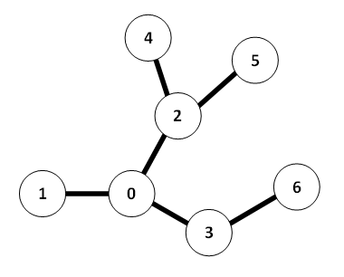

Gary is a bear. He lives in a system of caves consisting of N caverns numbered from 0 through N – 1. These caverns are connected by bidirectional tunnels, such that there is exactly one path between each pair of tunnels. (You might also know this kind of structure as a "tree", so you’ll know that there are necessarily N – 1 tunnels.)
Gary would like to explore this system of caves, using the following method:
- Put cavern 0 (his home) on a "to explore" list.
- Choose one cavern C from the list.
- Remove C from the list.
- Explore C: Add all caverns adjacent to C that have never been on the list.
- Repeat steps 2 to 3 while the list contains at least one cavern.
There are many ways to explore a system of caves. However, bears are forgetful. You would like to find a way to explore the cave such that the maximum length of the list is minimized. For example, given the following tree:
Here is one possible way to explore the tree, where the maximum length of the list is 4:
- Explore 0, list = {1, 2, 3}
- Explore 2, list = {1, 3, 4, 5}
- Explore 1, list = {3, 4, 5}
- Explore 3, list = {4, 5, 6}
- Explore 4, list = {5, 6}
- Explore 6, list = {5}
- Explore 5, list = {}
However, exploring in a different order, Gary can make it such that he never has to remember more than 3 elements; indeed, it is easy to see that 3 is optimal. Gary has retained you to find this minimum list length, given a system of caves.
The input file DATA5.txt will contain 5 test cases. Each test case will begin with one line, containing the number of caverns 1 <= N <= 1000. N – 1 lines will follow, each consisting of two distinct space-separated integers x and y, denoting a tunnel between caverns x and y. Of course, no tunnel will be described more than once, and 0 <= x, y < N.
The output file OUT5.txt will contain 5 lines of output, the minimum list length for each cave system.
7 0 1 0 2 0 3 2 4 2 5 3 6 4 0 1 1 2 2 3
3 1